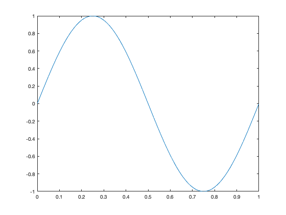
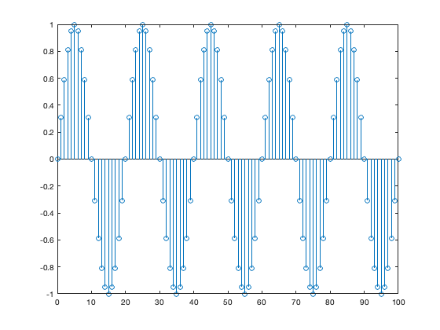
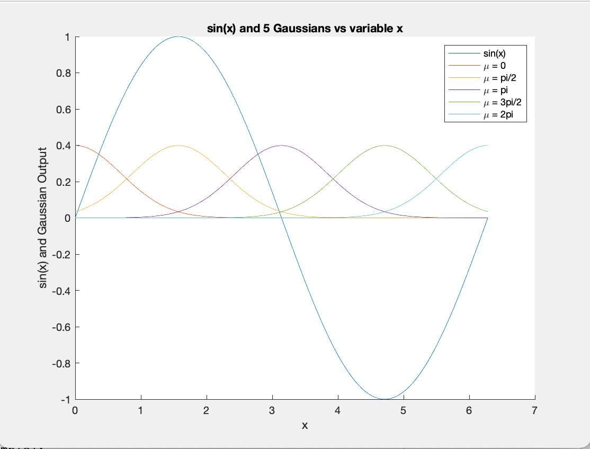
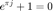

Assignment for FF
Contents
Part 1
x = linspace(0,1); y = sin(2*pi*x); plot(x,y);
Part 2
n = 0:100; x = sin(1/10*pi*n); stem(n,x)
Text formatting
You can even insert bodies of text in the form of comments
Here are some text styles
ITALIC TEXT BOLD TEXT MONOSPACED TEXT
Lists and other formats
Preformatted text:
Preformatted text
Here are some lists
- Item 1
- Item 2
- Item 1
- Item 2
Code Embedding
for i = 1:10 disp(x) end
External File Content Example
This example includes the file contents of sine_wave.m into published output.
x = 0:1:6*pi; y = sin(x); plot(x,y)
Images!

Latex!
This is an equation: .

Links
For more information, see : documentation
HTML Markup Example
This is a table:
| one | two |
| three | four |
LaTeX Markup Example
This is a table: